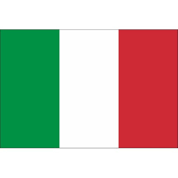
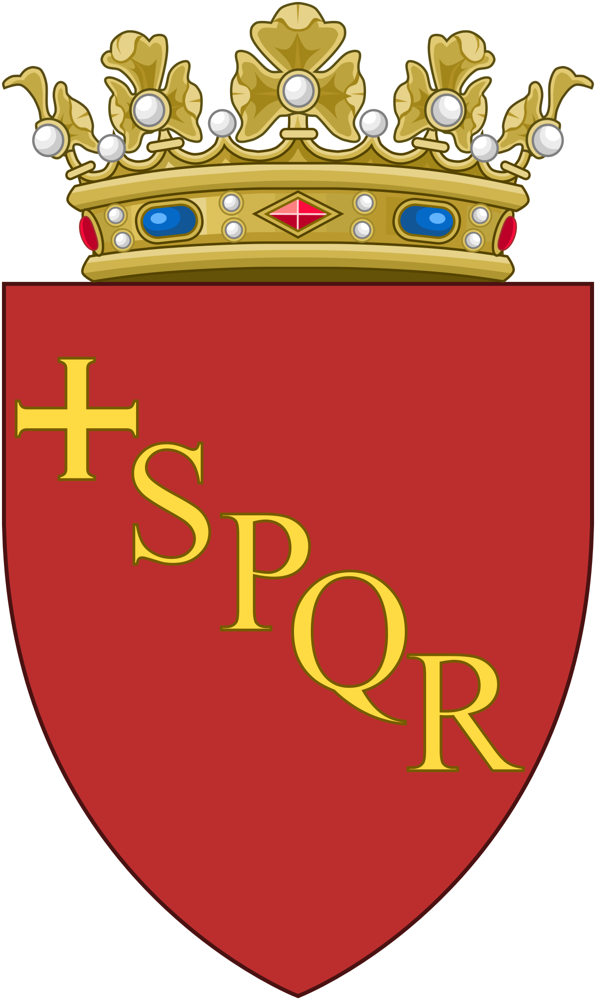

| Coliseo de Roma | ||
|---|---|---|

|
||
| Localización | ||
| País |  Italia | |
| Localidad |  Roma | |
El Coliseo o Anfiteatro Flavio es un anfiteatro de la época del Imperio romano, construido en el siglo I y ubicado en el centro de la ciudad de Roma. Su denominación original, Anfiteatro Flavio, hace referencia a la dinastía Flavia de emperadores que lo construyó; su nombre posterior, Coliseo, y por el que es más conocido en la actualidad, se debe a una gran estatua que había cerca, el Coloso de Nerón, que no ha llegado hasta nosotros. Por su conservación e historia, el Coliseo es uno de los monumentos más famosos de la Antigüedad clásica. Fue declarado Patrimonio de la Humanidad en 1980 por la Unesco y una de Las Nuevas Siete Maravillas del Mundo Moderno el 7 de julio de 2007.
Los materiales utilizados en la construcción de este son bloques de travertinos, hormigón, madera, ladrillo, piedra (toba), mármol y estuco. En la antigüedad poseía un aforo para unos 65 000 espectadores, con ochenta filas de gradas. Los que estaban cerca de la arena eran el Emperador y los senadores, y a medida que se ascendía se situaban los estratos inferiores de la sociedad. En el Coliseo tenían lugar luchas de gladiadores y espectáculos públicos. Se construyó justo al este del Foro Romano, y las obras empezaron entre 70 d. C. y 72 d. C., bajo el mandato del emperador Vespasiano. El anfiteatro, que era el más grande jamás construido en el Imperio romano, se completó en 80 d. C. por el emperador Tito, y fue modificado durante el reinado de Domiciano. Su inauguración duró 100 días, participando en ella todo el pueblo romano y muriendo en su celebración decenas de gladiadores y fieras que dieron su vida por el placer y el espectáculo del pueblo.
El Coliseo se usó durante casi 500 años, celebrándose en él los últimos juegos de la historia en el siglo VI, bastante más tarde de la tradicional fecha de la caída del Imperio romano de Occidente en 476 d. C. Los bizantinos también lo utilizaron durante el siglo VI. Además de las peleas de gladiadores, muchos otros espectáculos públicos tenían lugar aquí, como naumaquias, caza de animales, ejecuciones, recreaciones de famosas batallas y obras de teatro basadas en la mitología clásica. El edificio dejó de emplearse para estos propósitos en la Alta Edad Media. Más tarde, sirvió como refugio, fábrica, sede de una orden religiosa, fortaleza y cantera. De sus ruinas se extrajo abundante material para la construcción de otros edificios, hasta que fue convertido en santuario cristiano, en honor a los cautivos martirizados durante los primeros años del cristianismo. Esta medida contribuyó a detener su expolio y a que se conservara.
Descripcion
Arquitectura General

La arquitectura del Coliseo muestra un plan de ovoide que es forma de huevo. Es una elipse con varios centros, sino un aspecto general es bastante cerca de una planta ovalada. La mayor longitud y anchura hicieron 187,75m 155,60m para una altura constante de 50,75m. Se compone de un bloque de anfiteatro que rodea un espacio rodeado de un frente de dar la vuelta. Hay cuatro plantas. El espacio entre el auditorio y la fachada está hecha de dos pasillos adyacentes circulares por piso.
La fachada y los pasillos interiores son perforadas por 80 juegos de mesa en grandes tamaños, arcos de bóveda de medio punto separados unos de otros por medias columnas decoradas. Esta sucesión de arcadas existe sólo en los tres primeros niveles, el cuarto posterior es una pared sólida, una pieza de arquitectura llamado "ático" y se perfora con pequeñas ventanas rectangulares a razón de un arcade en dos. En la parte superior hay una instalación de piedra para la celebración de un mate vertical: 240 repetida, esta instalación formó una corona de postes verticales entre las cuales pudieran forzar una pintura: velarium.
Las terrazas se distribuyeron a lo largo de la curva de la anfiteatro. El más cercano de los asientos de la arena eran a 3 m de altura, la pared que separa el lastre se llama un podio. De la primera fila hasta la última, uno cruza anillos concéntricos 7, cada vez mayores por el aumento de las plantas. Estos anillos son la estructura del edificio, que se basan en los arcos descargadas por sus paredes de piedra que son perpendiculares. Cuanto más alto las plantas, además de la curva de la altitud aumenta su coeficiente: Significa más se asciende, más uno es "encima" de la persona que está delante, mientras que en la parte inferior, es más bien "detrás" esta persona.